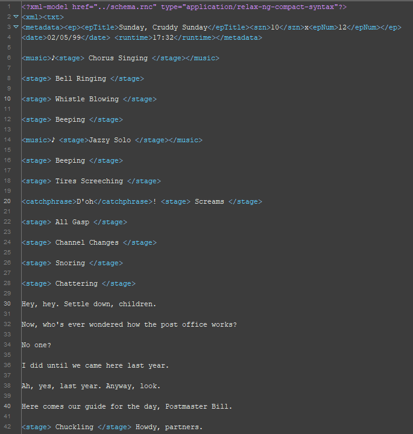

Text File Snippet
10x12 - Sunday, Cruddy Sunday
Quote
Post
by bunniefuu » 02/05/99 17:32
♪[ Chorus Singing ]
[ Bell Ringing ]
[ Whistle Blowing ]
[ Beeping ]
♪ [Jazzy Solo ]
[ Beeping ]
[ Tires Screeching ]
D'oh! [ Screams ]
[ All Gasp ]
[ Channel Changes ]
[ Snoring ]
[ Chattering ]
Hey, hey. Settle down, children.
Now, who's ever wondered how the post office works?
No one?
I did until we came here last year.
Ah, yes, last year. Anyway, look.
Here comes our guide for the day, Postmaster Bill.
[ Chuckling ] Howdy, partners.
We want to find how The Simpsons TV show has changed over the years in the amount of accounts of certain characters, phrases, and overall changes. We will do this by looking not at the entire collection but seasons 1,10,20, and 30 as they are 10 years apart each and could show monumental changes over the years. Specifically, our mission is to seek out how often the different family members, as well as musical occurences, appear throughout the history of the series.
Our issues here were
import requests
from bs4 import BeautifulSoup
# URL of the main page with links to each episode
main_url = 'https://transcripts.foreverdreaming.org/viewforum.php?f=431&sid=0695f7b460b8f09045f42e8fc4ea2456&start=702'
# Send a request to the main page and get the HTML response
main_response = requests.get(main_url)
# Parse the HTML content of the main page using BeautifulSoup
main_soup = BeautifulSoup(main_response.content, 'html.parser')
# Find all the links to each episode page on the main page
episode_links = main_soup.select('#wrap > div:nth-child(8) > div > ul > li > dl > dt > div > a.topictitle')
# Loop through each episode link and scrape the transcript text
for link in episode_links:
try:
# Get the URL of the episode page
episode_url = 'https://transcripts.foreverdreaming.org/' + link['href']
# Send a request to the episode page and get the HTML response
episode_response = requests.get(episode_url)
# Parse the HTML content of the episode page using BeautifulSoup
episode_soup = BeautifulSoup(episode_response.content, 'html.parser')
# Find the Div Container that contains the transcript text
transcript_div = episode_soup.find('div', {'class': 'postbody'})
# Get the text of the transcript
transcript_text = transcript_div.get_text()
# Get the season and episode number from the link text
link_text = link.get_text()
if link_text.startswith('01x'):
season_number = '1'
episode_number = link_text.split('-')[0][-2:]
else:
season_number = link_text.split('x')[0]
episode_number = link_text.split('x')[1]
# Create a filename for the transcript
filename = f'Season {season_number} Episode {episode_number}.txt'
# Write the transcript text to a file
with open(filename, 'w', encoding='utf-8') as f:
f.write(transcript_text)
print(f'{filename} saved successfully!')
except Exception as e:
print(f"Error occurred for episode {link_text}: {e}")
continue
print('Done processing all episodes.')
We want to find how The Simpsons TV show has changed over the years in the amount of accounts of certain characters, phrases, and overall changes. We will do this by looking not at the entire collection but seasons 1,10,20, and 30 as they are 10 years apart each and could show monumental changes over the years. Specifically, our mission is to seek out how often the different family members, as well as musical occurences, appear throughout the history of the series.
Our issues here were
XML File Snippet
We want to find how The Simpsons TV show has changed over the years in the amount of accounts of certain characters, phrases, and overall changes. We will do this by looking not at the entire collection but seasons 1,10,20, and 30 as they are 10 years apart each and could show monumental changes over the years. Specifically, our mission is to seek out how often the different family members, as well as musical occurences, appear throughout the history of the series.
Our issues here were
start = xml
xml = element xml {txt}
txt = element txt {metadata?, mixed{(stage | fam |music | catchphrase | person | location)*}}
metadata = element metadata {ep?, mixed { date* , runtime* , stage*}}
date = element date {text}
runtime = element runtime {text}
ep = element ep {mixed{(epTitle, szn, epNum)*}}
epTitle = element epTitle {mixed {fam* , person* , catchphrase* , location*}}
szn = element szn {text}
epNum = element epNum {text}
stage = element stage {mixed {fam* , location* , person*}}
fam = element fam {text | person*}
music = element music {mixed {stage* , location* , fam* , person*}}
catchphrase = element catchphrase {mixed {person*}}
person = element person {text}
location = element location {text}
We want to find how The Simpsons TV show has changed over the years in the amount of accounts of certain characters, phrases, and overall changes. We will do this by looking not at the entire collection but seasons 1,10,20, and 30 as they are 10 years apart each and could show monumental changes over the years. Specifically, our mission is to seek out how often the different family members, as well as musical occurences, appear throughout the history of the series.
Our issues here were